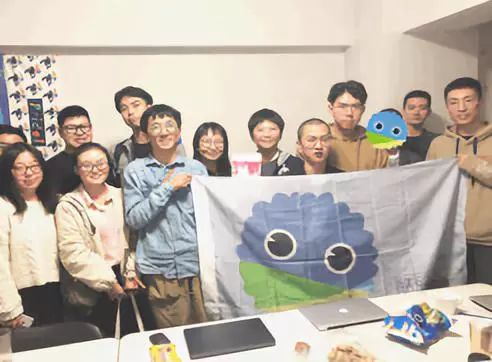

《公开》：我们都讨论了些什么

11月3日晚上，我们欢聚在杭州同志中心，
一起讨论了《公开》这本书。
（当然没有忘记大力批判本书对女同性恋的忽视！）
（瓜与《公开》与大家）
考虑有些旁友没有机会来现场参与讨论，
我们特意整理了当晚的讨论的基本问题和思路，
以飨酷儿论坛广大会员~

1. 关于男同性恋群体的身份认同构建
从“飘飘”、“同志”再到“gay”
地域基础——同性恋亚文化的城市属性——一个城市的宗教和民族多元、远离权力中心以及消费文化的兴盛，如何与同性恋相关？
时间维度——从古代中国的同性恋行为可以完全被吸纳在传统异性恋家庭中，到同性恋在性科学和国家管控的权力作用下“现身”，同性恋从“行为”变成一种“身份”；直至网络时代，信息的高速流动使得“gay”变为一个全球化的身份构建。
2. 关于同性恋话题的讨论（公共/私人领域）及其所带来的社会影响
同性恋在多大程度上是一个公共问题（issue）？
（背景：资本主义对公共领域与私人领域的划分）
将同性恋推进公共领域，又隐含着当今政治经济发展的何种逻辑？
同性恋的问题在很多时候不只是同性恋的问题，它同时也是对社会中不合理制度的反思与参照。
通过观察男同志社群得出的结论在多大程度上适用于女同志群体？
相较于西方世界，为什么中国社会对女性之间的亲密行为会有如此高的社会容忍度？这是对多元性的包容还是对女性欲望的否定？
3. 关于社会组织的发展
中国的男同志组织进入公众视野，很大程度上与对艾滋病的公共讨论有关。
这种对舆论空间的“放手”是中国政府在非典疫情之后总结出的治理经验，他们从中意识到：
掩盖传染病疫情是错误的传播策略，公开透明的信息不但不会损害政府形象，反倒有利于中央权力对资源的调配和社会力量的调动，从而更有效地控制疫情。
中国在艾滋病防治上的成果引来了很多国际组织与资本的关注，他们积极地与中国展开了一系列合作，其中以中盖艾滋病项目最有代表性。
该项目由盖茨基金会出资支持，旨在中国项目实施地区降低艾滋病的流行、降低高危人群的新发感染，并通过项目推动中国公民社会化进程的长足发展。
它的特别之处在于鼓励非政府组织的参与，近一半的项目经费直接用于非政府组织开展项目活动。项目鼓励他们参与项目的实施，充分发挥其在艾滋病防治领域的优势和作用。
为了得到基金会的资助，中国政府需要先扶植一批社会组织。由于男同性恋群体属于艾滋病防治工作的重点人群，所以接受中盖项目经济支持的相当一部分组织为男同志组织，这间接促成了男同志社会组织的正式化、规模化。
中国男同志组织的发展，与政府对艾滋疫情的清晰认知和承认是关联紧密的。
4. 关于性少数群体内部的划分与分裂
“阳光、健壮、中产”的男同性恋形象、“直男癌”男同志与男同性恋霸权主义
同志社群的内部歧视：种族、阶级、性别认同等不同的维度
性别角色的明确划分：“1/0”、“T/P”
联系同志社群的主要渠道——社交软件，却在现今将人的身体再度资本化、等级化，自恋文化主导了社交软件上的景观。
粉红经济对同志社群的消费是否正在消解同性恋的激进性与革命性？
社会与“粉红经济”资本的紧密结合在多大程度上促进了对性少数群体的包容性？
5. 关于性取向的流动
事实是否像我们观察到的那样——女性的性取向更具流动性？
一个人会被拥有何种性别认同的人吸引，这并不是一件一成不变的事情，它会随时间发生变化，通常与当时所处的环境所有关，我们称这种现象为性向流动（sexualfluidity）。
女性往往被认为是更容易“变弯”的，在我们的讨论里，大家一起分享了彼此与“变弯”有关的故事。
6. 关于亲密关系
我们对异性恋亲密关系与异性恋婚姻的想象过于机械：男女话语的不对等、女性的无意识自我矮化、对性别文化的内化；工业化的择偶标准与婚姻要求。
现代婚姻的实质：性、浪漫关系、精神上的投契、生活共同体、财产共同体……的打包（package）。
在全球化/资本主义市场化的背景下，人的流动变得频繁且容易，亲密关系的建立和维系却变得更加困难。这也使得亲密关系愈发作为一种人们获得安全感和稳定感的精神渴望，被不断崇高化和神秘化。

想了解更多读书会的信息嘛！不如下次来参与一回叭~
也欢迎大家积极留言发表自己的想法噢~
记录：太太 阿园 丸子
整理：妙玉
编辑：阿叙